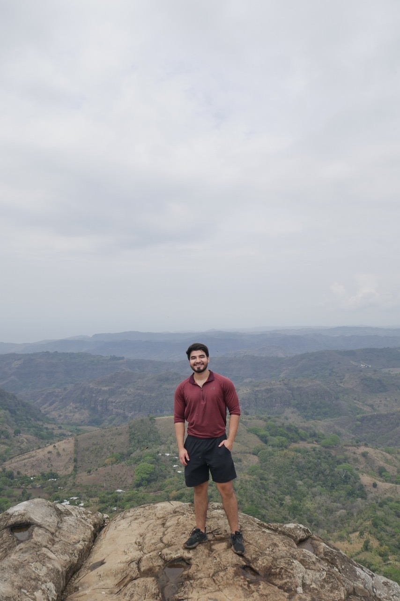

Presentación Personal
Soy Javier Chávez, tengo 21 años y soy apasionado por la tecnología. Estudié en el Liceo Francés, donde desarrollé una sólida formación académica y cultural. El ejercicio es fundamental en mi vida diaria; creo firmemente que mantener un cuerpo sano es esencial para un rendimiento mental óptimo. Esta disciplina física la aplico también en mis proyectos profesionales y académicos, buscando siempre la excelencia y la mejora continua.
